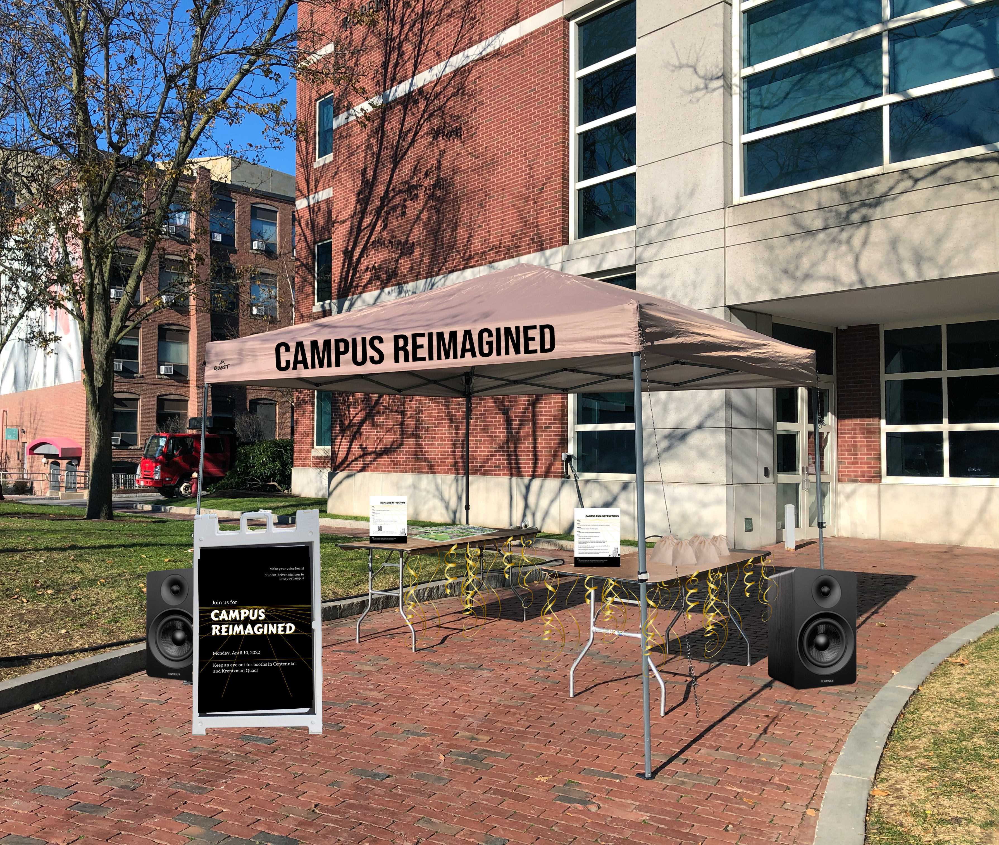

Campus Reimagined
Overview
For my Experince Design class's final project, there were only had two constraints: it had to involve a local community, and it had to relate to wellness/the outdoors. Some preliminary interviews helped me define the following problem statement. Northeastern students need a way to voice their opinions and ideate about the spaces on campus so that they can experience student-driven changes that make campus a better place for their wants and needs.
Research Methods
In order to design a solution, I used the following four research methods, listed roughly in order of use throughout the design process.
Ethnography


I first developed a better awareness for the current state of Northeastern's campus and its students' behaviors through ethnographical observation. I took note of both micro-level behaviors, such as how students used the chairs placed on the green space, as well as macro-level behaviors, including where they clustered and how they moved around various spaces.
Analogous Solutions


After familiarizing myself more with Northeastern's campus, I began researching pre-existing solutions that utilized outdoor spaces. The two major uses of the outdoor spaces on campus were recreation and studying, so I focused on the later and looked into solutions that improved the experience of working outside.
I also started considering the issue that students' needs were always changing. For example, when COVID-19 began spreading, safe, outdoor spaces to work became a necessity for students and their mental health. Thus, rather than trying to design for current pain points, I began exploring systems that would promote consistent improvements to campus, such as the "Envision Cambridge" campaign.
Survey
Next, I authored and distributed a survey to cover as wide of a variety of Northeastern students as possible, targeting different interests, grades, living locations, etc. to gauge what kinds of ideas they had.
Interviews
I also used interviews to experiment with ideation techniques, as well as further flesh out students' ideas and ways of thinking. With one technique, I asked the interviewee to come up with two random objects, then combine them into a business opportunity; another technique I used was reverse thinking, asking how they would make campus as unappealing and unusable as possible. Once they completed an exercise, I asked, "If you could reinvent any of the spaces on campus, what would you do and why?", allowing them to brain dump, explain, and sketch (as shown below).


Finally, I asked for their opinion on the initial ideation technique (if they thought it was helpful or not) and if the question as I phrased it made sense.
Intermediate Iterations
Once I conducted all the aforementioned research, I began debating what gave the most value to students. The survey and interview answers suggested a wide range of ideas, so I looked back to "Envision Cambridge," a community engagement campaign that asked locals to answer prompts about how Cambridge could be improved. This approach appeared to have the most longevity; rather than ideate a one time solution, I could design a yearly campaign that would collect suggestions straight from the community I was trying to serve. With that in mind, I created my first iteration of "Campus Reimagined."
I split the campaign into two parts, "Campus Runs" and "Reimagine." Every year, a one-day event would be held with two booths set up on campus, respectively. With "Campus Runs," participants would be given a toolkit including a written instruction card, a small map of campus, numbered Bluetooth stickers similar to AirTags, and a QR code to a form. They would then be given 30 minutes to "run" around campus, putting stickers in any areas they believe to be poorly or under utilized. If they wanted, they could fill out the form along the way, inputting the sticker number and describing a specific idea for that space (I emphasized the speech-to-text function that most phones have to reduce the friction of typing out the entire idea). At the end of that run's 30 minutes, the location of all the stickers would be saved in a database to gain insight into which places students deemed the least effectively used.
"Reimagine" would be a lower commitment, but still tactile, option. Students would stick numbered pins into a large 3D model of campus and then fill out a form describing their ideas. They could also sketch on physical paper, which a campaign volunteer would then upload. The motivation behind the model and pins is to add a stronger physical and visual appeal. Similarly, the option for physical drawings is meant to be playful and tactile, while simultaneously reducing the pain of having to write out ideas or descriptions.
After the event, the data and submissions would be cleaned, reviewed, and possibly combined, before being uploaded onto a website where students could choose what ideas they like most via a ranked choice voting system. Then, whichever idea received the most votes by the end of the week would be implemented by the school.
In order to test these ideas, I asked participants to go around a specific building for 5 minutes and send back photos of spaces, rather than use stickers. I gave them the following to act as their "toolkit."

And received photos like those below:

I asked others to sit down and test the "Reimagine" aspect of the campaign. Instead of a 3D model and pins, I printed
out a map of campus on two 11"x17" pieces of paper and asked participants to use a Sharpie to mark the spaces they would change.
After their respective activity, I debriefed the participants by asking the following questions.
- How would they describe this event/product/service using their own words?
- What, if anything, would make them want to use this event/product/service frequently?
- What incentives would they need to participate/sustain engagement?
- If the user had a magic wand, what would they change about the event?
I learned that being constrained to a smaller part of campus was more helpful than being told to explore any part of the entire campus. Furthermore, while food or gift card incentives would be helpful to encourage people to participate at the start, doing it in small groups with friends made the activity enjoyable throughout, while additionally encouraging creativity and competition. I also received feedback on the graphic assets— instead of having a game-like aesthetic, I was encouraged to focus more on the spatial aspect— and the clarity of the written and verbal instructions.
Final Iteration
Keeping all these things in mind, I modified how the campus runs would be held, how the instructions were given (more pictoral for the written version, and what was said verbally), as well as the graphics. Additionally, I fleshed out the event's marketing and the voting website, settling on the final iterations below.
Instructions
Website
Marketing